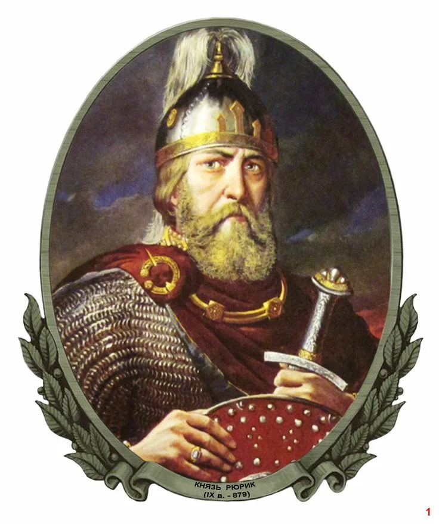
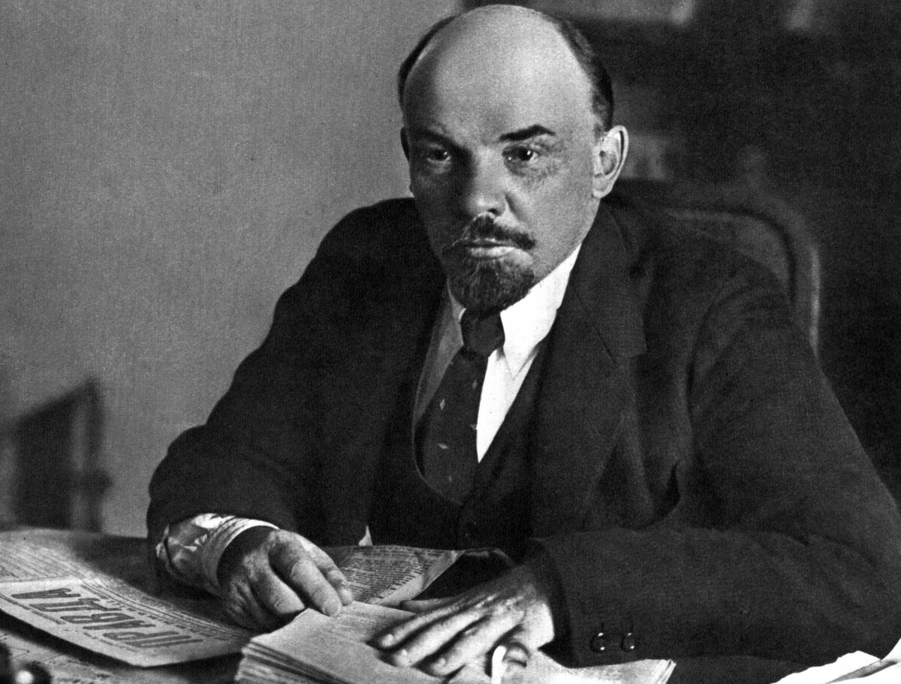
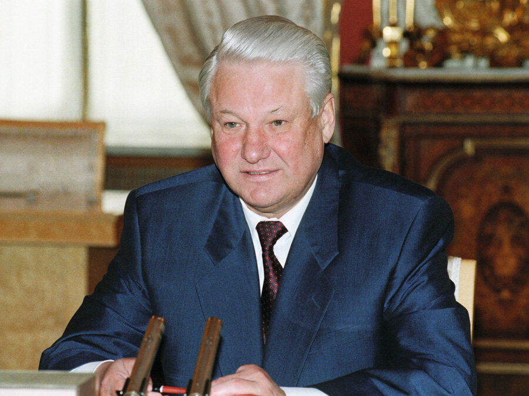

Личностей много, но вы не одни. Мы постараемся помочь вам познакомиться с
"важными историческими шишками".
Раздел "Личности" посвящен знаковым историческим личностям. Изучайте жизненные пути и достижения выдающихся личностей, которые оставили свой след в истории человечества. Погружайтесь в исторические биографии и узнавайте, как эти люди формировали ход событий своего времени и какой вклад в истории они оставили.

Рюрик. Даты правления: 862-879
- Варяг, родоначальник династии Рюриковичей
- Был призвач в Ладогу в 862 году, затем в Новгород северными племенами славян словене ильменские и кривичи

Владимир Ильич Ленин. Даты правления: 1917-1924
- 1917 г. - Двоевластие (Петросовет и Временное правительство)
- 1917 г. - Апрельский кризис Временного правительства. Июньский кризис, июльский кризис. Корниловский мятеж. Провозглашение России республикой
- 1917 г. - Октябрьский переворот
- октябрь 1917 г. - Декреты большевиков о власти, о мире, о земле
- с октября 1917 - «Красногвардейская атака на капитал»: национализация банков и всех предприятий
- 2 ноября 1917 - Издание «Декларации прав народов России», по которой национальным меньшинствам, проживающим на территории нового государства, было даровано право на самоопределение
- И так далее

Борис Николаевич Ельцин. Даты правления: 1991-1999
- Август 1991 г. – подавление путча ГКЧП, указ о запрете деятельности КПСС
- 8 декабря 1991 г. – Беловежское соглашение (распад СССР)
- 1991-1992 гг. – «шоковая терапия» Гайдара:либерализация цен; введение свободы торговли; сокращение бюджетных расходов; введение российской валюты
- 1992 г. – отставка Е. Гайдара, назначение В. Черномырдина
- 1992 г. – начало приватизации
- 1993 г. – начало выпуска ГКО
- И так далее